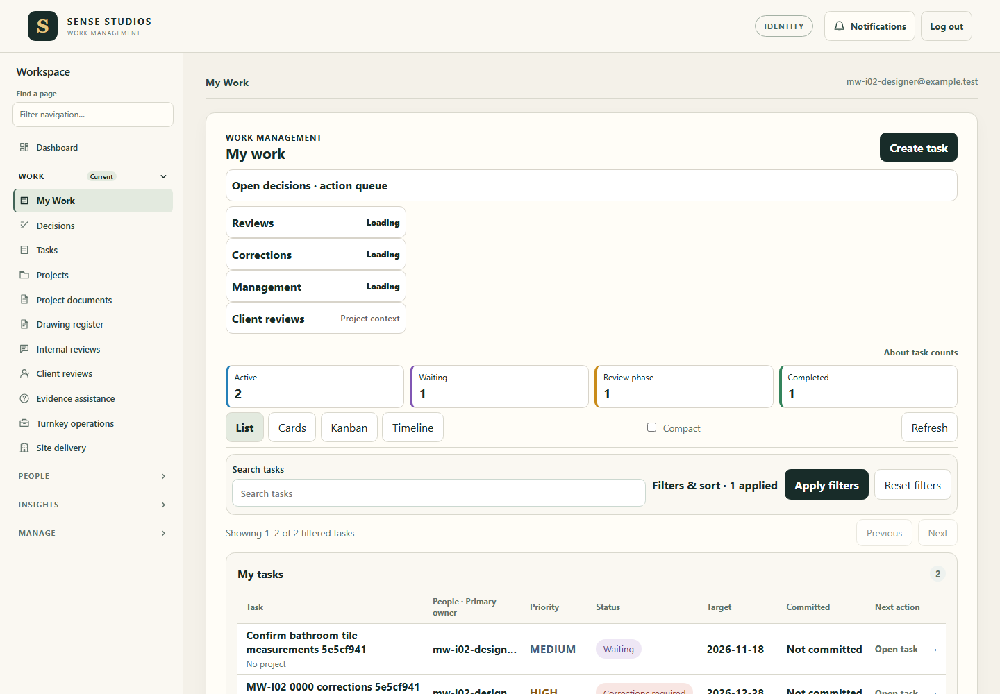

Final prototype comparison BLOCKED. Browser stopped before final My Work capture loop. No authenticated390×844/320×740 My Work geometry was produced; no historical or component capture is presented as new evidence.
This early capture is1440×1000, not the required1440×900. It does not establish the final visual gate or equivalent-state prototype comparison.
